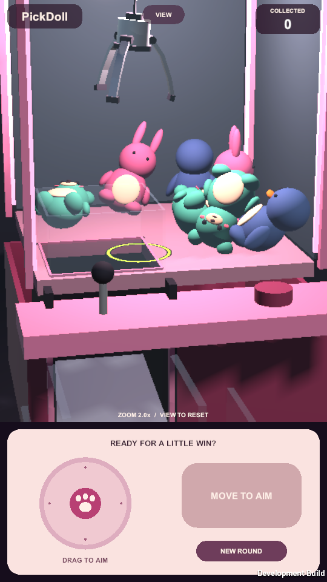
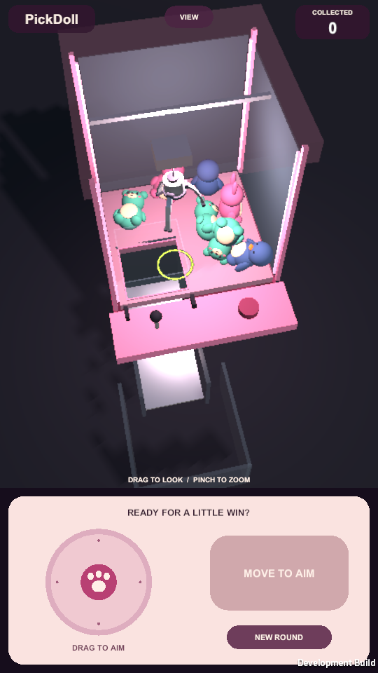
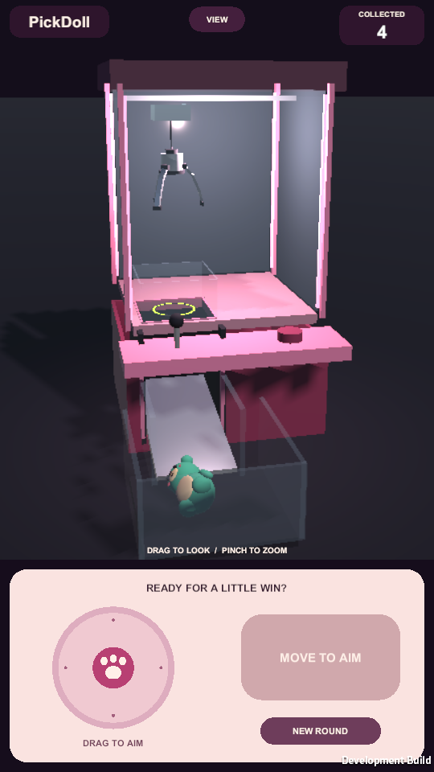
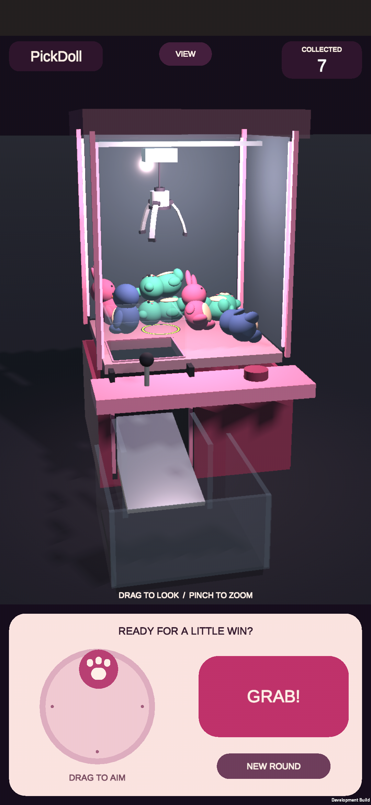

일관된 대기 위치
최초 실행·NEW ROUND·배출 후 모두 배출구 위에서 대기한다. 이동한 뒤 GRAB을 시작한다.
배출구 위 대기, 충분한 접촉까지 하강, 눕거나 기대고 쌓인 배치를 개선한다.
최초 실행·NEW ROUND·배출 후 모두 배출구 위에서 대기한다. 이동한 뒤 GRAB을 시작한다.
손가락·본체의 실제 충돌 임펄스에서 수직 접촉력을 측정한다. 인형 접촉 시 감속하고, 충분한 접촉이 지속되면 닫는다. 바닥·벽 접촉과 깊이·시간 제한도 둔다.
기존 3종·7개를 유지하며 연속적인 위치·방향, 선 자세·기울기·눕기와 위에서 내려앉는 배치를 섞는다. 처음부터 충돌체를 겹쳐 고정하지 않는다.
여유 작업으로 곰 하나에 주둥이·볼터치·작은 표정을 더한 외형 시안을 적용했다. 질량과 접촉 형상은 유지한다. 최종 천 재질·봉제선·눌림 복원은 10주차 계획을 유지한다.



에디터 100개 초기 배치 검사와 Windows 실행 검사 통과. 지정 조준·일반 그립의 선 자세 3종 및 누운 자세 3종, 총 6/6 집기·배출·집계를 확인했다. 폰·폴드·탭 3비율 UI 검사도 통과했다. Android 빌드·v2 서명 검증과 S26 설치·실행, 기존 기록 7개 보존을 확인했다. 2026년 11월 25일 갤럭시 탭 설치 후 사용자가 동작 확인을 회신했다.
서 있는 곰·펭귄의 최저 본체 높이는 0.957, 토끼는 1.038에서 인형 접촉으로 멈췄다. 누운 3종은 모두 0.837에서 바닥 등 구조물 접촉으로 하강을 멈추고 집기·배출했다. 기존 고정 기준 높이는 0.965였다. 단위는 게임 월드 기준이다.
초기 접촉 기준은 수직 충돌력 합 1.2 이상이 0.12초 유지되거나 순간값 4.5 이상, 최대 본체 하강 높이 0.83·최대 하강 시간 4.5초다. 힘은 직전 물리 스텝에서 측정하므로 순간 충돌값이 정지 임계값보다 클 수 있다. 힘 자체를 4.5 이하로 보장하는 제어는 아니다.
이 결과는 지정 위치·자세의 회귀 검사이며 전체 플레이 승률을 뜻하지 않는다. 일반/약한 그립의 변동은 유지한다.
PASS 100 natural layouts: 7 prizes, initial bounds do not interpenetrate or cross cabinet/floor Home over chute / contact probes configured Physical contact, settling, grip and exit are verified in the player
PASS startup_joint_assembly_stable=True seven_prizes_three_species_stable=True; lying=4 new_round_home_0=True new_round_home_1=True new_round_home_2=True transparent_header_rendered_behind=True analog_drag_precision_release_ownership=True; small=0.0077; full=0.1303 joystick_excludes_camera_raycast=True empty_header_routes_camera_gestures=True pinch_1_to_2_limits_view_reset_no_yaw_jump=True direction_and_precision_buttons_removed=True safe_touch_layout_540x960=True closed_start_opens_before_descent=True exit_without_chute_not_counted=True entry_only_not_counted=True upright_delivery=True; duplicate_probes_once=True; pos=(-0.23, 0.14, -1.16) gravity_pose_90=True; pos=(-0.13, 0.14, -1.08) gravity_pose_180=True; pos=(-0.23, 0.14, -1.05) transparent_guard_blocks_rolling=True; pos=(-0.23, 0.73, 0.06) automatic_0: acquired=True; home=True; visible_tray=True; busy_input_blocked=True; no_early_count=True; high_release=True; pos=(-0.28, 0.14, -1.11); total=4; lowest=0.957; stop=PRIZE_CONTACT; force=6.50; safe=True automatic_1: acquired=True; home=True; visible_tray=True; busy_input_blocked=True; no_early_count=True; high_release=True; pos=(-0.30, 0.14, -1.23); total=5; lowest=1.038; stop=PRIZE_CONTACT; force=11.51; safe=True automatic_2: acquired=True; home=True; visible_tray=True; busy_input_blocked=True; no_early_count=True; high_release=True; pos=(-0.40, 0.14, -1.24); total=6; lowest=0.957; stop=PRIZE_CONTACT; force=6.50; safe=True automatic_3: acquired=True; home=True; visible_tray=True; busy_input_blocked=True; no_early_count=True; high_release=True; pos=(-0.17, 0.14, -1.06); total=7; lowest=0.837; stop=STRUCTURE; force=3.33; safe=True automatic_4: acquired=True; home=True; visible_tray=True; busy_input_blocked=True; no_early_count=True; high_release=True; pos=(-0.35, 0.14, -1.17); total=8; lowest=0.837; stop=STRUCTURE; force=3.35; safe=True automatic_5: acquired=True; home=True; visible_tray=True; busy_input_blocked=True; no_early_count=True; high_release=True; pos=(-0.36, 0.14, -1.02); total=9; lowest=0.837; stop=STRUCTURE; force=3.33; safe=True empty_cycle_returns_without_acquisition=True new_round_preserves_session_count=True; events=9; total=9 large_counter_matches_receipts=True grab_over_hole_blocked=True reload_preserves_total_and_species=True
PASS startup_joint_assembly_stable=True seven_prizes_three_species_stable=True; lying=2 new_round_home_0=True new_round_home_1=True new_round_home_2=True transparent_header_rendered_behind=True analog_drag_precision_release_ownership=True; small=0.0075; full=0.1303 joystick_excludes_camera_raycast=True empty_header_routes_camera_gestures=True pinch_1_to_2_limits_view_reset_no_yaw_jump=True direction_and_precision_buttons_removed=True safe_touch_layout_452x1158=True
PASS startup_joint_assembly_stable=True seven_prizes_three_species_stable=True; lying=4 new_round_home_0=True new_round_home_1=True new_round_home_2=True transparent_header_rendered_behind=True analog_drag_precision_release_ownership=True; small=0.0075; full=0.1303 joystick_excludes_camera_raycast=True empty_header_routes_camera_gestures=True pinch_1_to_2_limits_view_reset_no_yaw_jump=True direction_and_precision_buttons_removed=True safe_touch_layout_906x1088=True
PASS startup_joint_assembly_stable=True seven_prizes_three_species_stable=True; lying=3 new_round_home_0=True new_round_home_1=True new_round_home_2=True transparent_header_rendered_behind=True analog_drag_precision_release_ownership=True; small=0.0077; full=0.1335 joystick_excludes_camera_raycast=True empty_header_routes_camera_gestures=True pinch_1_to_2_limits_view_reset_no_yaw_jump=True direction_and_precision_buttons_removed=True safe_touch_layout_876x1400=True
Windows 화면 비율 모사 검사이며 실제 폴드 접기·펼치기 시험과는 구분한다. S26 업데이트 직전·직후의 로컬 영수증을 비교해 기존 7개가 모두 보존된 것을 확인했다. 2026년 11월 25일 갤럭시 탭 설치 후 사용자가 동작 확인을 회신했다.

0.8.0 / code 10 · ARM64 · 개발용 APK
42,189,117 bytes · v2 서명 검증 통과
Unity/Builds/Week08/Android/PickDoll-week08.apk
SHA-25634252a1a126cd1a0c79df19bf3b74c8e9be4c9a54059f6c4f455c230d78ffcfa
덮어쓰기 설치 전 7개 → 설치 후 7개. 기존 영수증 전체가 남아 있는지 비교했다. 게임 화면에서도 7개를 확인했다.
S26 설치·실행과 기록 보존을 확인했다. 갤럭시 탭 SM-X820에도 동일한 0.8.0 / code 10 APK를 설치·실행했고, 2026년 11월 25일 사용자가 동작 확인을 회신해 현재 범위로 마감한다. PC의 지정 6조건 검사와 사용자 품평은 구분한다.
첫 Android 빌드 프로세스가 APK 없이 종료돼 중단 로그를 보관하고 캐시를 사용해 재개했다. 재개 빌드의 성공 표시·파일·서명을 확인했다. 기존 AssetPackManager 시작 로그는 이번 버전에도 남아 있으며 16주차 조사 항목을 유지한다.
이번 주는 3종의 집기 감각을 우선한다. 새 종·유료 에셋·도감·PGS·클라우드 저장은 추가하지 않는다. 일반/약한 그립 변동은 유지하며 인형을 붙이거나 순간 이동시켜 성공시키지 않는다.
기존 로컬 기록 형식과 파일을 유지한다. 자동 검사는 별도 임시 저장을 사용한다. S26 설치·실행과 업데이트 기록 보존을 확인했으며 갤럭시 탭의 사용자 동작 확인을 받았다.